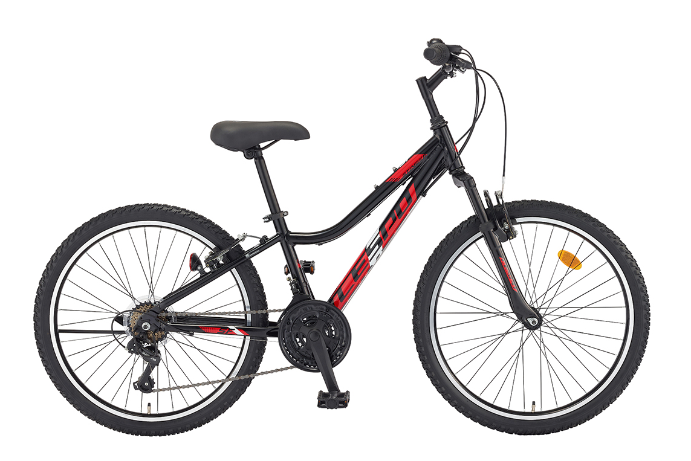
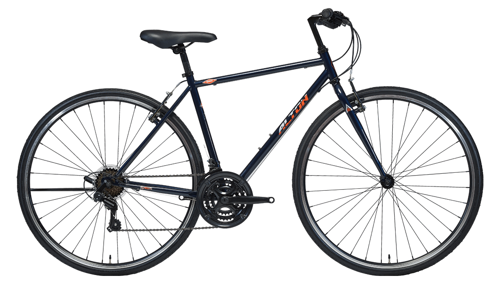

삼천리 자전거
Samchunly
#삼천리_알톤
#국내_최대_자전거업계
삼천리 자전거나 알톤 자전거에 가서 예산을 이야기하고 상담받아 마음에 들고 이쁜걸로 골라서 사면 됩니다.
물론 일부 라이더들은 본격적으로 자전거에 입문하기에는 매우 부족한 모델들 뿐이다 라고 할 수 있습니다.
하지만 대부분의 사람들에게 자전거에 입문하는데 있어 가장 큰 복병은 예산일 것 입니다.
비싸지 않으면서도 오랜 기간 노하우가 축적되어있는 이 두 브랜드는 한정된 상황에서 다양한
선택지를 제공할 것 입니다. 들어가는 구동계 또한 값비싼 모델에도 들어가는 시마노 사의
부품들이 들어가므로 당신의 안전은 보장될 것 입니다.
걱정하지 말고 방문하고, 구매하고, 페달을 굴리면 됩니다. 그게 다 입니다.
삼천리를 추천하는 타입 :
일상 속에서 가볍게 타고 다닐 자전거를 찾는 라이더
비교적 저렴한 가격으로 자전거를 사고 싶은 라이더
자전거는 타고싶지만 따릉이는 맘에 들지 않는 라이더
RETRY
Photo Zone
이미지를 누르면 브랜드 페이지로 이동합니다.

삼천리 레스포 스팅거 SF

알톤 스피어